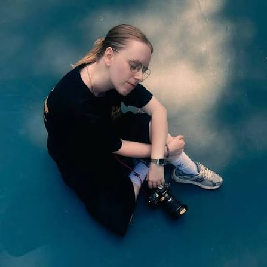

PHOTOGRAPHIE
Florence Pernet
La photographie est une façon de raconter des histoires, de révéler les détails et de conserver les émotions d'un instant.
Mon univers
À travers ses images, Florence cherche à mettre en valeur les personnes, les lieux et les petits moments du quotidien. Mon approche privilégie l'authenticité et la sensibilité.
Ses domaines
- Photographie de portrait
- Photographie artistique
- Photographie de lieux et de paysages
- Reportage et moments de vie
Quelques images
